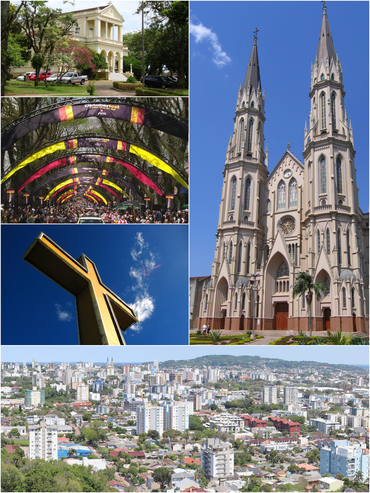

Santa Cruz do Sul é um município brasileiro no centro do estado do Rio Grande do Sul, a 155 km de Porto Alegre. Sua população, conforme estimativa do IBGE, era de 138 104 habitantes em 2024, sendo o 14.º município mais populoso do Rio Grande do Sul. Com uma área de 733,4 km², localiza-se na região do Vale do Rio Pardo, fazendo limite com os municípios de Vera Cruz, Rio Pardo, Sinimbu, Venâncio Aires, e Passo do Sobrado. Com clima temperado, constitui uma região fisiográfica de transição entre o Planalto e a Depressão Central, contando com vegetação oriunda da Mata Atlântica e do Pampa, e predominância litográfica de rochas vulcânicas.
Com uma população em grande parte católica e evangélica, é lar da Catedral São João Batista, e da Igreja Evangélica de Confissão Luterana, maior templo evangélico do Rio Grande do Sul. Abriga ainda a Universidade de Santa Cruz do Sul, com onze mil alunos matriculados em 52 cursos de graduação, além de três outras instituições de ensino superior, catorze escolas de ensino médio, 114 de ensino básico, e três hospitais, possuindo ainda um aeroporto e um presídio regional.
Com boa infraestrutura para o turismo, a cidade é conhecida por sediar a maior Oktoberfest do Rio Grande do Sul, a Oktoberfest de Santa Cruz do Sul, por receber um dos maiores festivais de arte amadora da América Latina, o Encontro de Arte e Tradição, e pelo Autódromo Internacional de Santa Cruz do Sul, sediando ainda dois clubes profissionais de futebol, o Esporte Clube Avenida e o Futebol Clube Santa Cruz, além de um clube profissional de basquetebol, o União Corinthians.
